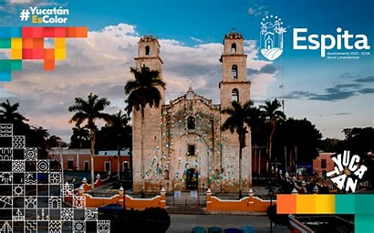
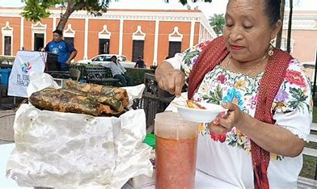
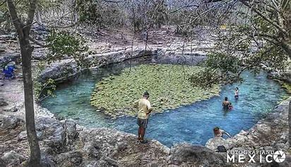

ESPITA
IR AL MENU
Durante la epoca prehispanica el sitio donde hoy se levanta el
poblado pertenecio a la provincia de los cupules, donde mas tarde, con
la llegada de los españoles, se fundaria en la actualidad y localidad
se estableceria el sistema de encomienda durante 1549, mismo que seria
depuesto en 1785. Desde la colonizacion, se construyeron vastos
edificios entre los que destaca LA IGLESIA DEDICADA A SAN JOSE y las
casas de las plaza central

La iglesia
fue construida a principios del siglo xvll como una parroquia dedicada
a San Jose a diferencias de otras construcciones religiosas yucateca,
la iglesia de Espita compartia un centro ceremonial de los antiguos
pobladores. La iglesia se incendio el 3 de mayo de 1738 y fue
reconstruida años mas tarde, la torre sur fue terminada en 1750 con
simon de los santos segura como parrocos.
En 1875 fue construido el atrio, mismo que al igual que el enverjado,
fue retirado en 1911 por ordenes del comadante militar.
¿PORQUE ESPITA SE LE CONOCE COMO PUEBLO MAGICO?
Espita es poseedora de un
fascinante pasado colonial que se preserva en sus majestuosos y
coloridos edificios. La iglesia de San Jose es uno de los mejores
ejemplos, con sus importantes torres de gran altura y su elegante
estilo franciscano. Es una gran parte de la riqueza cultural del
municipio recae en el labor de sus artesanos y artesanas que siguiendo
la tradicion familiar, elaboran productos muy apreciados como lo son
las canastas de bejuco, piezas talladas en madera, dulces derivados de
la miel, prendas de vestir bordadas apunto de cruz, hamaca entre otras.
UBICACION

El mercado municipal de Espita, tambien
conocido como el mercado municipal Juan Jose Mendez, es una parada
obligada cuando estes de visita por el Pueblo Magico de Yucatan
Inaugurado en 1906, es un edificio antiguo con techos altos, balcones
de herrería y los tipicos arcos que prevalecen en la arquitectura
local. Cuenta con una explanada, en cuyo centro hay una fuente coronada
con una bella escultura en piedra.
Ademas, se trata del mejor lugar para comer en Espita y tambien para percibir la energia del pueblo y su gente.
Te invitamos a conocer todo lo que puedes encontrar en el mercado municipal de Espita.
Por la mañana
Si llegas temprano al mercado, encontraras a los vendedores de frutas y
verduras. Aprovecha para comprar algunas de las variedades locales que
no se encuentran con tanta facilidad en otras partes del pais, como el
aguacate dulce, la pitahaya, la guanabana, el nance, la chaya, el
saramuyo y la guaya.
Si te agarra la sed, no dudes en probar alguno de los juegos de fruta fresca que se venden ahi, ¡los hacen a tu gusto
Tambien por la mañana, se encuentran tacos, tortas y panuchos. Pero si
es domingo, aprovecha, porque ese dia tambien se vende lechon y
cochinita, recien salidos del horno.
Por la tarde y noche
Despues de las 6:00 pm, el mercado se transforma y la experiencia es
completamente diferente. A esta hora, los antojitos son lo que
predomina y puedes probar toda clase de panuchos, salbutes, papadzules
y tamales.
Es la oportunidad perfecta para degustar el famoso kots’ob, un tamal
tipico de Espita que se envuelve en hoja santa y va relleno de ibes
blancos, cebollin, pepita molida y chile. El kots’ob puede estar
horneado, frito, al vapor y en pib, pregunta por sus variedades.
Como llegar al mercado municipal de Espita
¡Es imposible perderse! El mercado municipal Juan Jose Mendez se
encuentra justo enfrente de la iconica iglesia de San Jose, en el
primer cuadro del pueblo.
GASTRONOMIA

ENTRE SUS PLATILLOS QUE ALBERGA ESPITA ESTAN:
- El frijol con puerco.
- La chaya con huevo.
- El puchero de gallina.
- El queso relleno.
- Los salbutes y los panuchos.
- El pipian de venado.
- Los papadzules.
- La cochinita pibil.
- Los joroches.
- El mucbil pollo.
- Los pimes y los tamales.
ENTRE SUS POSTRES PODEMOS ENCONTRAR
- Arepas.
- Yuca con miel.
- Calabaza melada.
- Camote de coco.
- Cocoyol en almibar.
- Mazapan de pepita de calabaza.
- Tejocotes en almibar.
- Dulce de cricote.
Lugares de Espita que debes conocer:
- Espita esta relacionado con valladolid son vecinos tan
cercanos , porn donde quieras visitar te puedes encontrar los cenotes
para disfrutar.

Espita es una antigua leyenda ampliamente
propagada en la poblacion de Tekal de Venegas, refiere a una campana de
gran tamaño que segun se dice estuvo por muchos años en la iglesia
priincipal de pueblo, pero ante el enfrentamineto de la guerra de
castras.
Si tines la posibilidad de conocer estos bellos lugares no te los
pierdas te aseguro que no te arepentiras jamas vive un a gran y bonita
experiencia.
¡gracias!
SUBIR ARRIBA